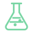

--:--
Loading date…
Your ecosystem, at a glance.
Dashboard
Ecosystem Dashboard
A complete overview of your ecosystem at a glance.
Warden AI
Warden AI
Your ecosystem assistant. Sensor data and device access may be unavailable until connected.
System Monitor
System overview
CPU usageUnavailable
Memory usageUnavailable
System healthUnknown
Live host metrics require a connected backend. Browser estimates are not real hardware readings.
Telemetrics
Environmental telemetry
Air temperature-- °C
Air humidity--%
Soil temperature-- °C
Soil moisture--%
Water levelUnknown
Air qualityUnknown
No readings are fabricated. Values remain unavailable until a sensor source is connected.
File Manager
Files
▣
TelemetrySensor data
▣
ExperimentsExperiment records
▣
ReportsGenerated reports
▣
BackupsSystem backups
These are interface entries. Real file browsing requires a backend or File System Access integration.
Settings
Personalisation
Saving and applying settings requires the corresponding JavaScript handlers.
Ecosystem Controls
Physical devices
Telemetry connected — controls available
Device Manager
Connected devices
Automation Studio
Automations
Rules use verified sensor inputs, safe thresholds, cooldowns and actuator acknowledgements before activation.
Alerts & Incidents
Data Lab
Data Lab
Analyse sensor trends and patterns from telemetry history.

Experiment LabExperiments
Reports
Reports
Backup & Recovery
Security Center
Security Center
Developer Console